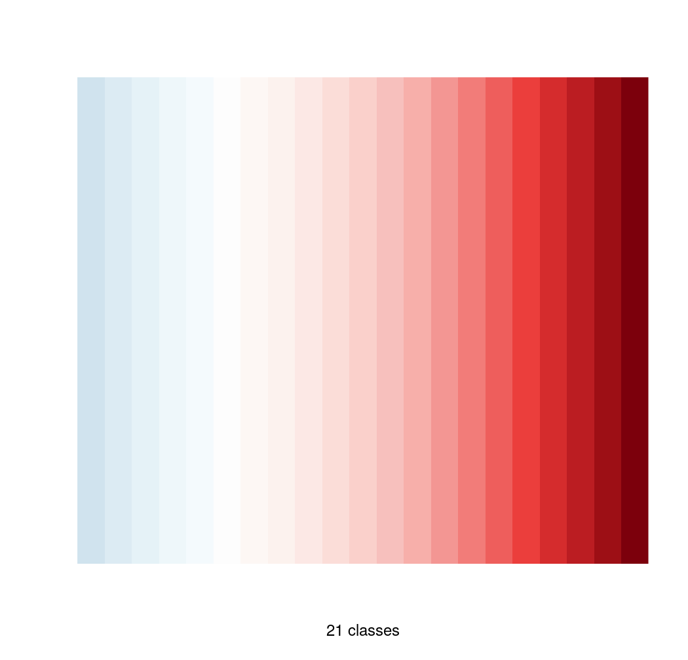

Build sequential, diverging and qualitative color palettes. Diverging color palettes can be dissymmetric (different number of colors in each of the two gradients).
carto.pal(pal1, n1, pal2 = NULL, n2 = NULL, middle = FALSE, transparency = FALSE)
| pal1 | name of the color gradient (see Details). |
|---|---|
| n1 | number of colors (up to 20). |
| pal2 | name of the color gradient (see Details). |
| n2 | number of colors (up to 20). |
| middle | a logical value. If TRUE, a neutral color ("#F6F6F6", light grey) between two gradients is added. |
| transparency | a logical value. If TRUE, contrasts are enhanced by adding an opacity variation. |
A vector of colors is returned.
Sequential palettes:
blue.pal
orange.pal
red.pal
brown.pal
green.pal
purple.pal
pink.pal
wine.pal
grey.pal
turquoise.pal
sand.pal
taupe.pal
kaki.pal
harmo.pal
Qualitative palettes:
pastel.pal
multi.pal
Use display.carto.all to show all palettes and use display.carto.pal to show one palette.
Qualitative palettes were generated with "i want hue" (http://tools.medialab.sciences-po.fr/iwanthue/) by Mathieu Jacomy at the Sciences-Po Medialab.
# Simple gradient: blue carto.pal(pal1 = "blue.pal" ,n1 = 20)#> [1] "#DCF0F8" "#D0E8F2" "#C4E0EC" "#B9D8E7" "#ADD0E1" "#A1C8DC" "#96C0D6" #> [8] "#8AB8D0" "#7EB0CB" "#6EA6C3" "#5F9BBC" "#4F91B4" "#4086AD" "#307BA5" #> [15] "#236F9A" "#1E6085" "#19506F" "#14405A" "#0F3045" "#0B2130"# Double gradient: blue & red carto.pal(pal1 = "blue.pal", n1 = 10, pal2 = "red.pal", n2 = 10)#> [1] "#0F4464" "#17577C" "#206A94" "#317DA7" "#4B90B5" "#64A3C4" "#79B3CF" #> [8] "#8CC1DA" "#9FCFE5" "#B2DEF0" "#FCDACA" "#F8BCAE" "#F59F93" "#F28278" #> [15] "#EE625B" "#EA3B36" "#E71312" "#D00002" "#A60007" "#7C000C"# Adding a neutral color carto.pal(pal1 = "blue.pal", n1 = 10, pal2 = "red.pal", n2 = 10, middle = TRUE)#> [1] "#0F4464" "#17577C" "#206A94" "#317DA7" "#4B90B5" "#64A3C4" #> [7] "#79B3CF" "#8CC1DA" "#9FCFE5" "#B2DEF0" "#F6F6F6FF" "#FCDACA" #> [13] "#F8BCAE" "#F59F93" "#F28278" "#EE625B" "#EA3B36" "#E71312" #> [19] "#D00002" "#A60007" "#7C000C"# Enhancing contrasts with transparency carto.pal(pal1="blue.pal", n1 = 10, pal2 = "red.pal", n2 = 10, middle = TRUE, transparency = TRUE)#> [1] "#0F4464" "#17577Ce8" "#206A94d2" "#317DA7bb" "#4B90B5a5" "#64A3C48e" #> [7] "#79B3CF78" "#8CC1DA61" "#9FCFE54b" "#B2DEF034" "#F6F6F61e" "#FCDACA34" #> [13] "#F8BCAE4b" "#F59F9361" "#F2827878" "#EE625B8e" "#EA3B36a5" "#E71312bb" #> [19] "#D00002d2" "#A60007e8" "#7C000C"# The double gradient can be asymetric carto.pal(pal1 = "blue.pal", n1 = 5, pal2 = "red.pal", n2 = 15, middle = TRUE, transparency = TRUE)#> [1] "#8FBFD769" "#9DC9DE5a" "#ABD3E54b" "#B9DDEC3c" "#C7E7F42d" "#F6F6F61e" #> [7] "#FCDACA2d" "#F9C7B83c" "#F7B4A74b" "#F5A1955a" "#F38F8469" "#F17C7378" #> [13] "#EF686087" "#EC4E4996" "#EA3531a5" "#E71C1Ab4" "#E50302c3" "#CD0002d2" #> [19] "#B20005e1" "#970008f0" "#7C000C"# Build and display a palette mypal <- carto.pal(pal1 = "blue.pal", n1 = 5, pal2 = "red.pal", n2 = 15, middle = TRUE, transparency = TRUE) k <- length(mypal) image(1:k, 1, as.matrix(1:k), col =mypal, xlab = paste(k," classes",sep=""), ylab = "", xaxt = "n", yaxt = "n",bty = "n")